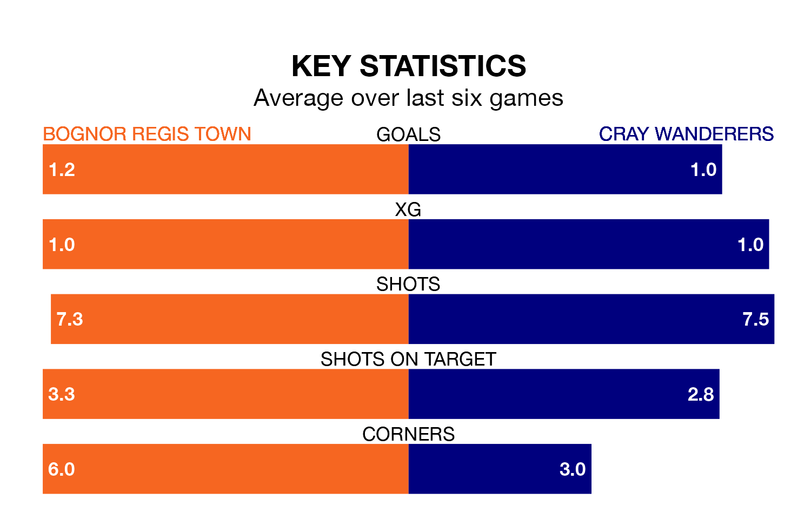

Cray Wanderers travel to Bognor Regis Town on late Tuesday in Isthmian Premier Division.
The visitors come into the game on the back of a draw in their last match, having tied with Lewes 1-1 at home.
Bognor Regis, meanwhile, won their last match, 2-1 against Chatham Town.
In the last 10 years, Bognor Regis and Cray have played each other on eight occasions. Bognor Regis won four of them, Cray one, and they drew three times.
On average, Bognor Regis scored 2.8 goals and Cray 1.5 in those matches.
Their last meeting was on December 7 2022, when they played out a 2-2 draw.
With 27 goals in 22 games so far this season, Cray are scoring at below the league average rate with 1.2 goals per game. But they are conceding fewer than average too, letting in 31 goals at a rate of 1.4 per game.
Bognor Regis are also below average scorers, with 1.5 goals per game, compared to a league average of 1.6. They have conceded 1.4 goals per game.
Wanderers are 15th in the table after 22 games, of which they have won six and drawn seven, earning 25 points.
Town are three places ahead of the away team in 12th, with seven wins and nine draws putting them on 30 points.
The hosts are in mixed form in Isthmian Premier Division, with two wins and three draws from their last six games.
With a win and four draws over that period, Cray's form is slightly worse – they have taken seven points from 18, compared to Bognor Regis's nine.
Updated: 15:34, 08/01/24